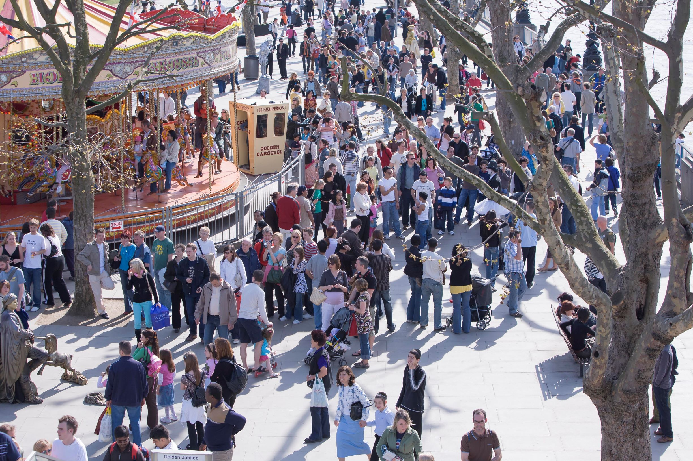

The primary reason for creating this social enterprise website is to assist people living or visiting different London Boroughs in order to find information about support, social events and volunteering in the community more readily. Although different boroughs have their own websites, it would be very useful if we could create a user experience that is similar across the boroughs - leading to better information dispersal and more successful outcomes.
